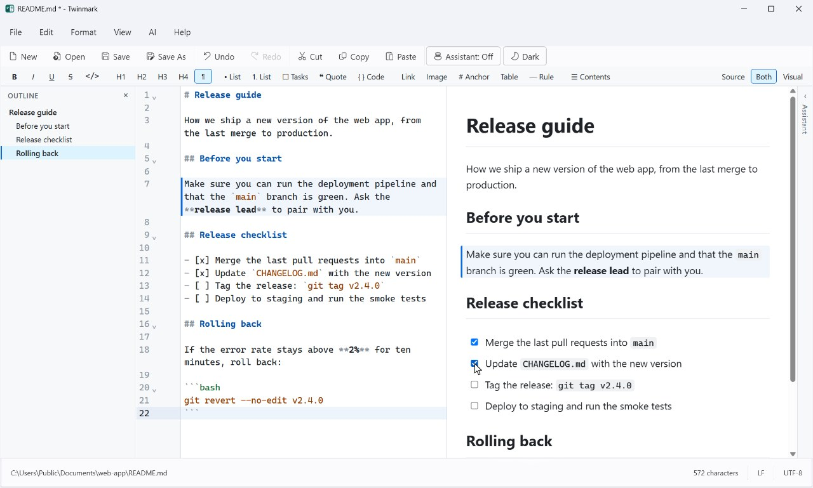
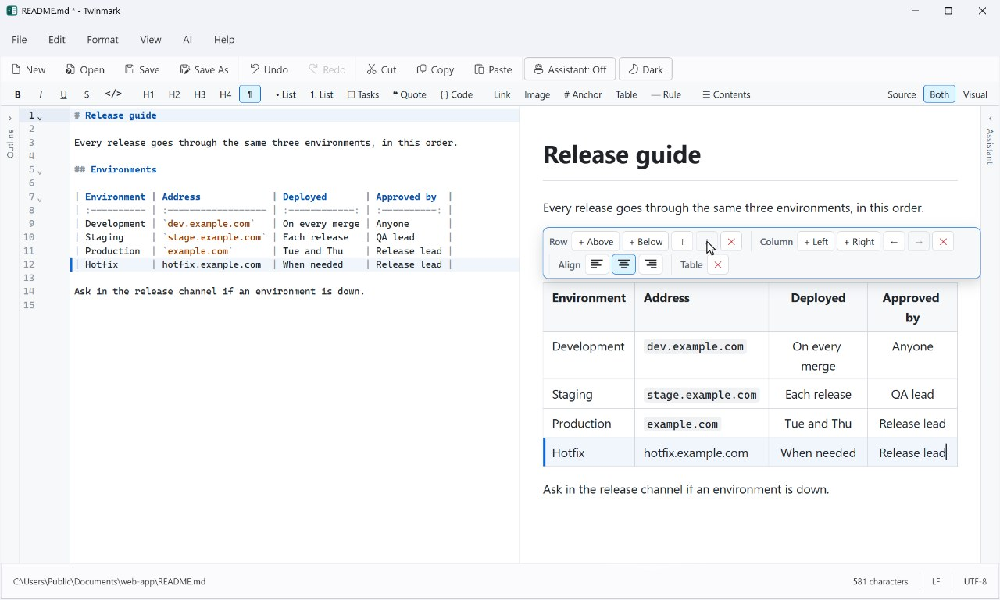
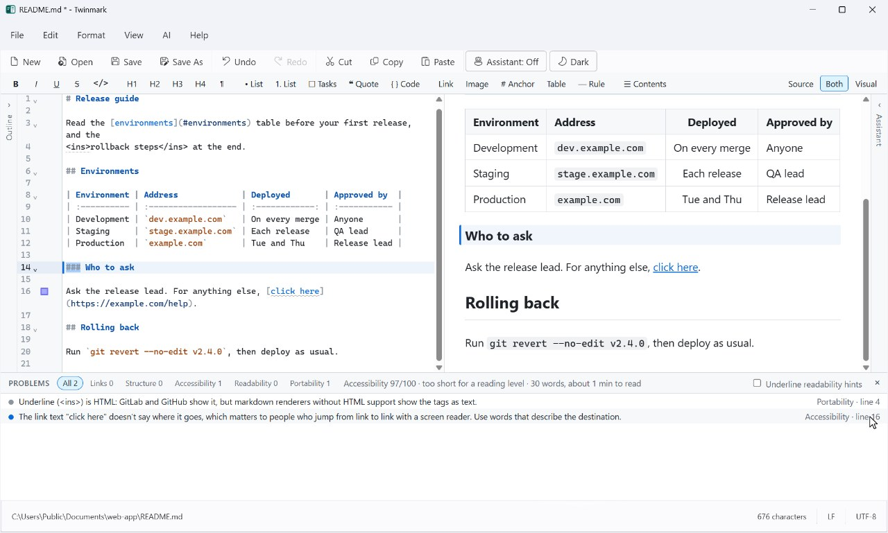
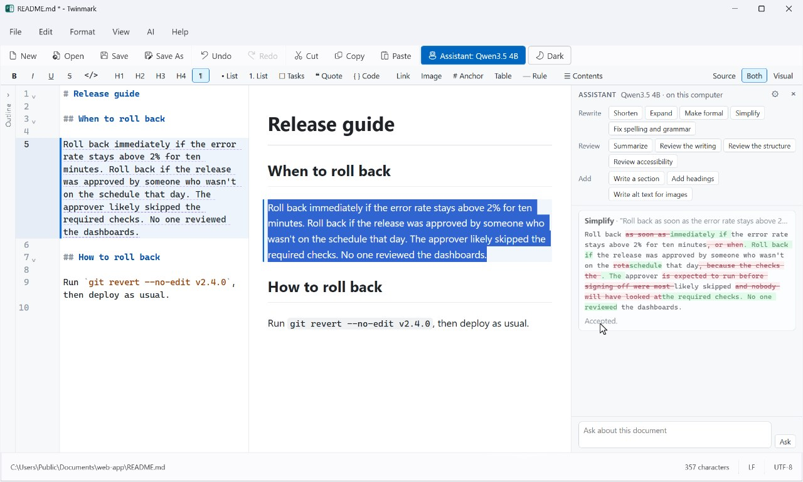
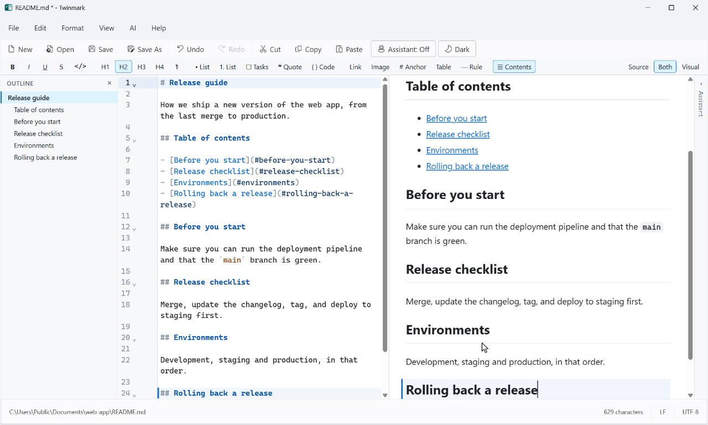
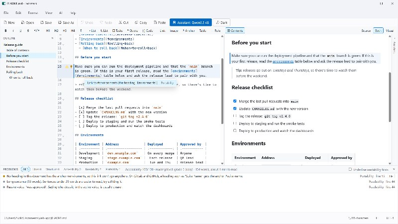
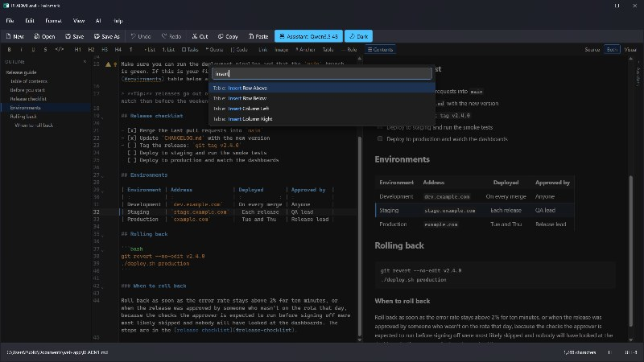
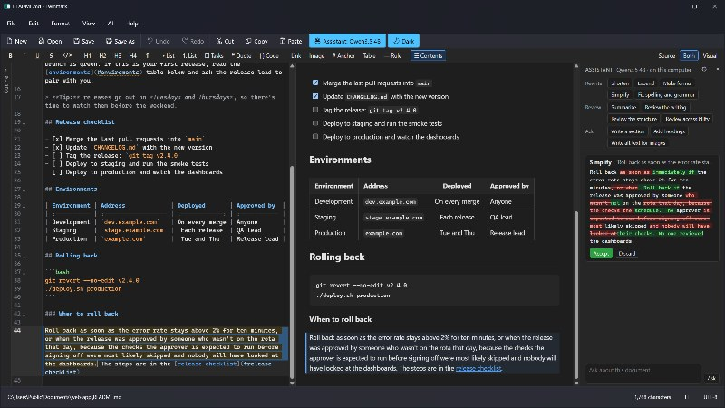

Version history
Earlier versions of each document, compared line by line and restored in one step (File > Version History).
The tour
Every clip on this page was recorded in Twinmark 1.0, the version in the Microsoft Store, editing a sample release guide. Nothing is mocked up; the pointer is drawn in so you can follow it.
1 · Writing
Type markdown on the left and the page appears on the right; type on the page and the markdown is written for you. Only the part you change is rewritten, so the rest of the file stays exactly as it was.

**release lead**; a task ticked.2 · Tables
Click into a table and a toolbar appears: add rows and columns, move them, align them. Tab goes from cell to cell. In the markdown, the table stays lined up, so it's as easy to read there as on the page.

3 · Checks
The problems panel (Ctrl+Shift+M) lists what won't work where your document is going: links to headings that aren't there, headings that skip a level, HTML that GitLab removes, link text that says nothing. Fix them one at a time, or all at once.

#enviroments corrected to #environments, <u> written as <ins>, which GitLab keeps, and a heading put back at the right level.4 · The assistant
Select some text and pick an action. The assistant's suggestion appears as a change, words taken out and put in, and nothing in your document changes until you accept it. Here it runs entirely on the computer, with a model downloaded once.

5 · Getting around
Ctrl+Shift+P opens the command palette: type a few letters of anything Twinmark does. Here it adds a table of contents, which then keeps itself up to date when a heading changes.

6 · Peace of mind
Twinmark keeps what you write, even when something goes wrong, and turns it into the file someone else needs.
Earlier versions of each document, compared line by line and restored in one step (File > Version History).
Unsaved changes are kept as you go, and offered back the next time Twinmark starts.
A moment after each change, if you turn it on; it pauses after the assistant's changes.
A page that needs nothing else, a PDF, or a Word document with Word's own headings, lists and tables, pictures included.
7 · And more
Click a picture to see it full size. Each is Twinmark 1.0, as it is in the Microsoft Store's listing.



Everything in this tour is in the free trial.